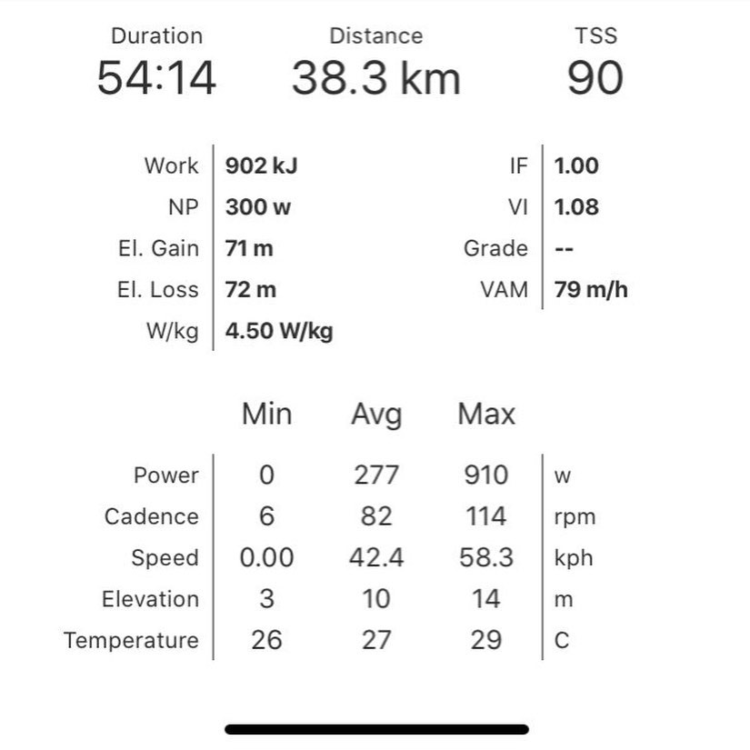
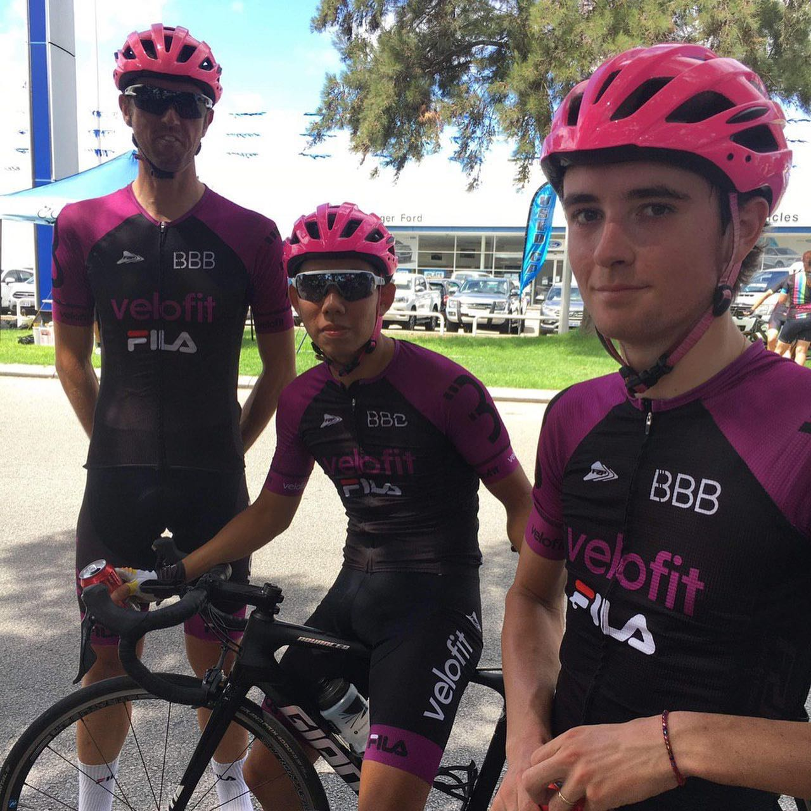
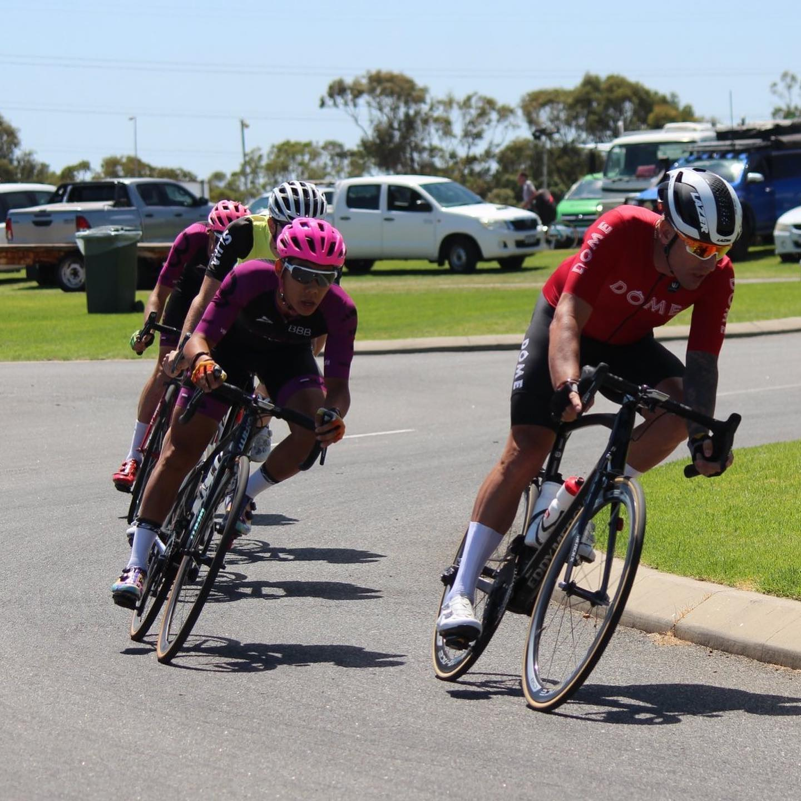
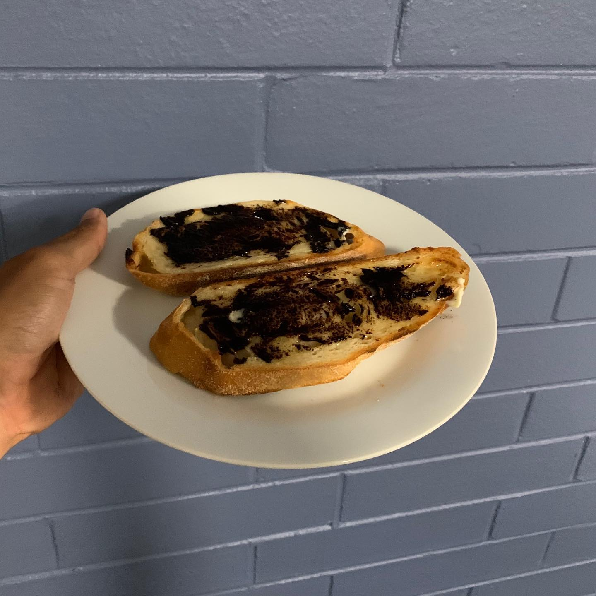
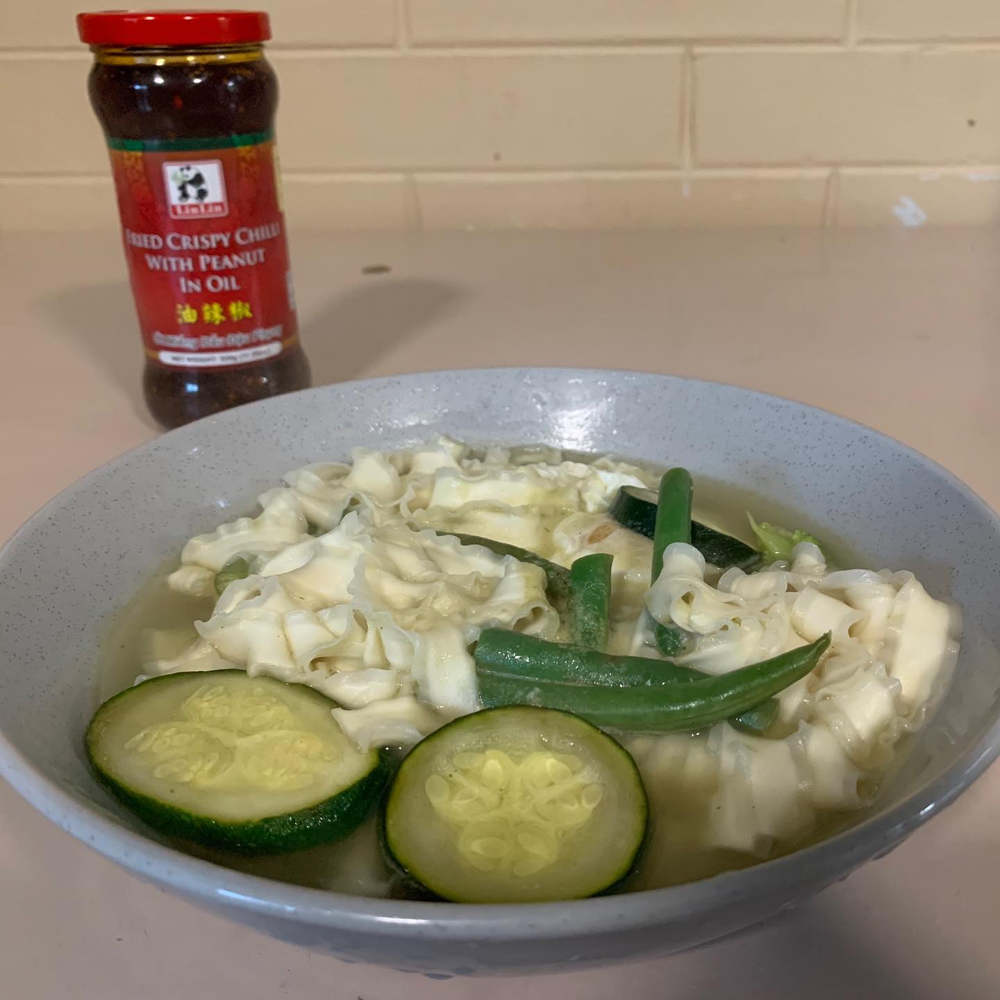
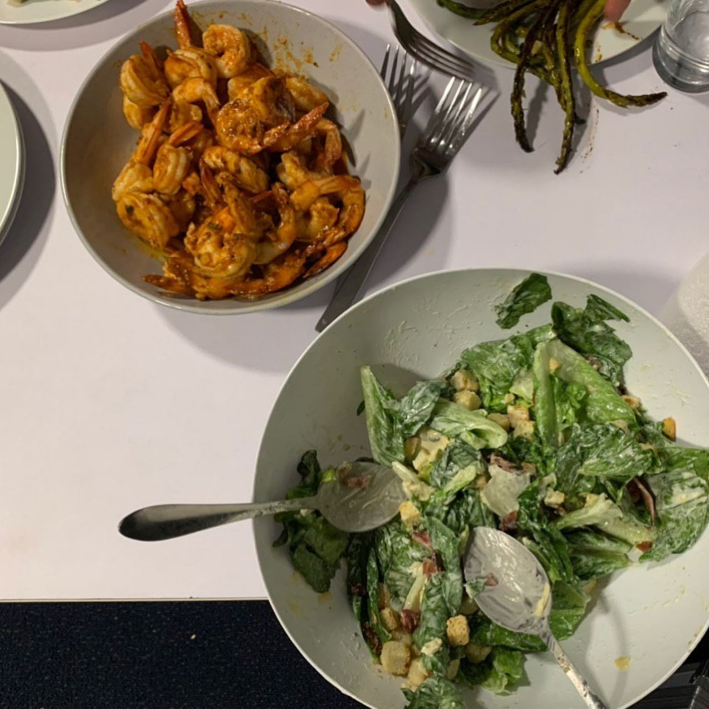

Hey guys, Jerome Teo @jeromegunz here from National Team Singapore 🇸🇬 and this is #AthleteTakeover of @foodbuddy account 😎 Yesterday I shared with you why I love Cycling and today I’m sharing with you one of my standard weekends. Today I had a race and I have races for next 2 weeks. I'm prepping for a solid season of UCI Asia tour racing, and some Australian NRS. I think that bike racing is always a gamble, you win some and lose some. Today I came 4th. Attacked with 3 laps to go, set up the winning 2 man breakaway, my breakaway compatriot attacked me with 600m to go, bunch caught me on the line. It was quite frustrating for me. Some lesson learned and tip for you - don't attack into a headwind, if you're hurting, everyone else probably is too 😉 My pre-race breakfast was a vegemite toast, recovery lunch was a Taiwanese noodles with veggies and egg, and I finished the day with awesome prawn bbq with friends 👍🏼🍤😁 Wishing everyone a fantastic week ahead! Cheers, Jerome! — #Cyclinglife #Cycling #perth #bikerace #racing #athletetraining #singaporeathletics #cyclinglifestyle #singapore
2020-03-01 22:20:27
Back to main page